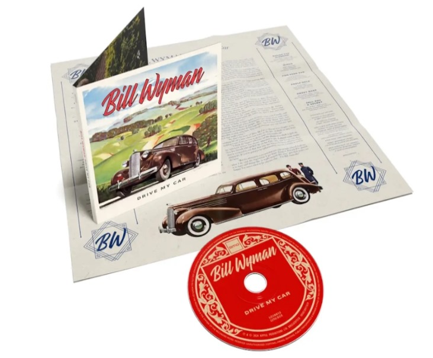

Le bassiste historique des Rolling Stones va publier le 9 aout prochain chez BMG un nouvel album
intitulé Drive My Car.
Il se composera de 12 morceaux dont 2 exclusivement réservés à la version CD.

Samedi 8 Juin 2024
Rolling Stones, Atlanta - 7 juin 2024
Cette nuit, les Stones ont donné un concert avec, chose assez rare, 3 morceaux chantés par Keith.
C'est Sweet Sound of Heaven qui est passée à la trappe. Espérons que cette éviction ne soit pas
définitive.
Start Me Up
IORR
Let's Spend The Night Together
Angry
Sweet Virginia (vote)
Dead Flowers
Tumbling Dice
Mess It Up
You Can't Always Get What You Want
Tell Me Straight (Keith)
Little T&A (Keith)
Happy (Keith)
Sympathy for the Devil
Honk Tonk Women
Midnight Rambler
Gimme Shelter
Paint it, Black
Jumping Jack Flash
Satisfaction
Keith annonce avec le sourire avoir été forcé par le groupe à jouer Happy.
Samedi 8 Juin 2024
Un weekend d'anniversaires stoniens
Hier, 1/06/2024, Ronnie Wood a eu 77 ans. Aujourd'hui, 2/06/2024 Charlie Watts en aurait eu 83.
Dimanche 2 Juin 2024
Un weekend d'anniversaires stoniens
Le (Hackney Diamonds) Tour 2024 a pris son envol cette nuit à Houston au Texas.
Malgré le grand nombre de morceaux du dernier album joués en répétition, seuls Angry, Mess it Up et
Sweet Sound Of Heaven ont été jouées hier soir. Autre fait étonnant, Keith Richards n'a chanté qu'un
seul morceau.